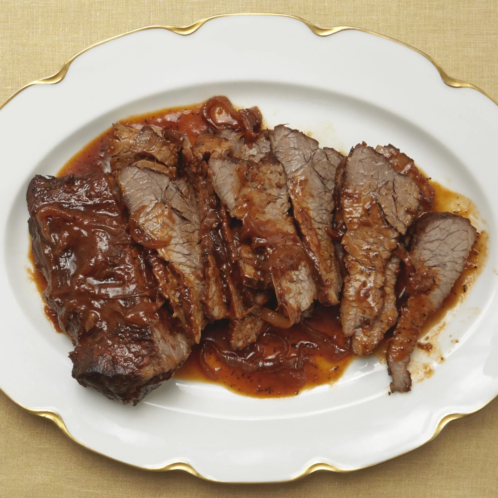

the best food in existence,from guides "to the Galaxy"
An intricate and dangerous coctail, invented by By RickyBobby
purpoted to make you feel like "habing your brqains smashed out by a slice of lemon wrapped round a large gld brick".
>
Ingredients
- 1 teaspoon dried thyme
- 1 teaspoon salt
- ¼ teaspoon ground black pepper
- 1 (3 pound) beef brisket
- 1 tablespoon olive oil
- 1 red onion, sliced
- 1 (14.5 ounce) can beef broth
- 1 (8 ounce) can tomato sauce
- ½ cup red wine
Recipe instruction (taken from the book)
- Preheat oven to 350 degrees F (175 degrees C).
- Mix thyme, salt, and black pepper in a small bowl and rub the mixture over both sides of brisket.
- Heat olive oil in a roasting pan over medium-high heat; place brisket in the hot oil and brown on both sides, 3 to 4 minutes per side. Remove brisket from pan and set aside.
- Place red onion slices into the hot roasting pan and cook and stir until onion is slightly softened, about 2 minutes. Stir in beef broth, tomato sauce, and wine.
- Place the brisket back into the roasting pan and cover pan with foil.
- Roast the brisket in the preheated oven for 1 hour; remove foil and baste brisket with pan juices. Place foil back over roasting pan and roast brisket until very tender and pan sauce has thickened, 1 1/2 to 2 more hours.
Return to top
Return to main page